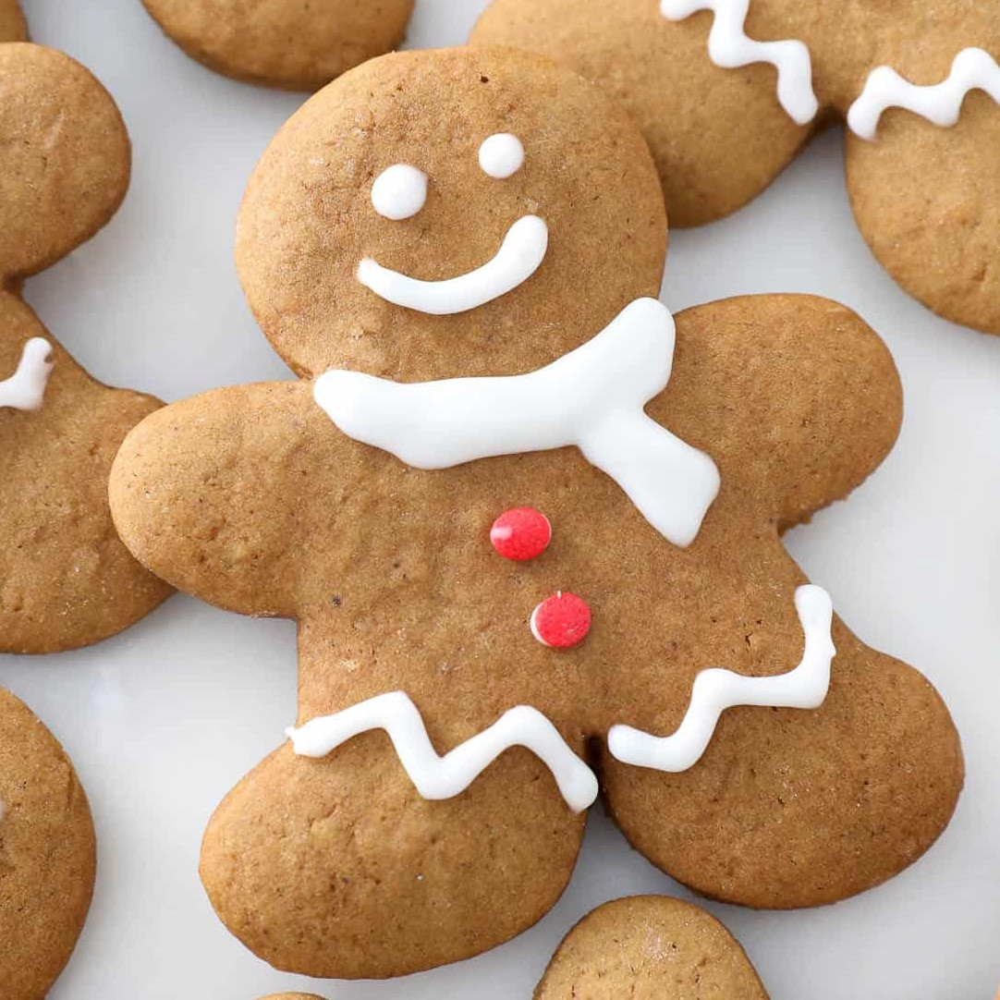
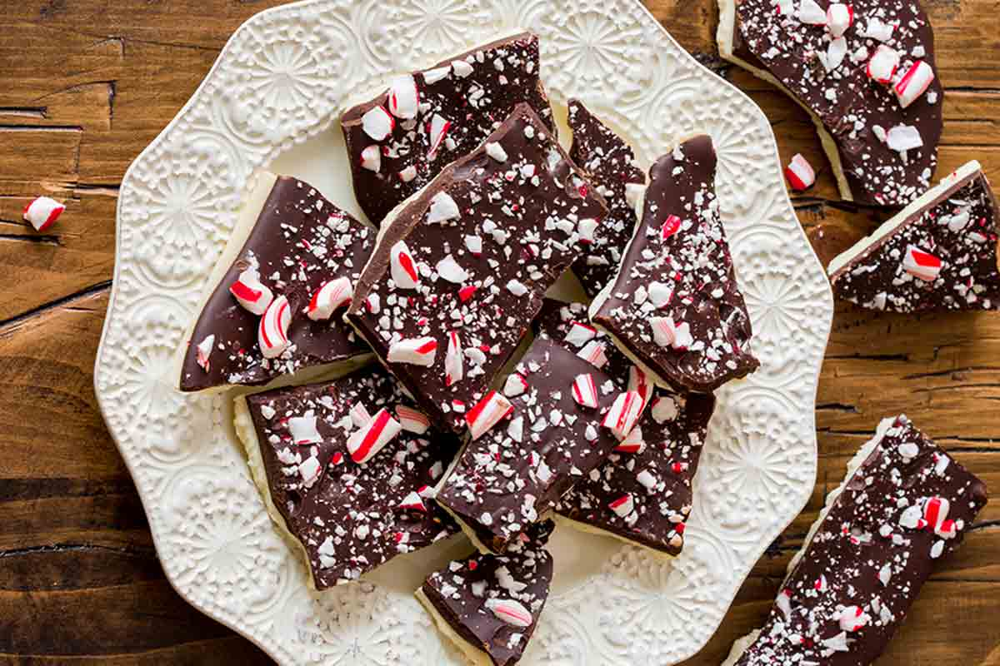
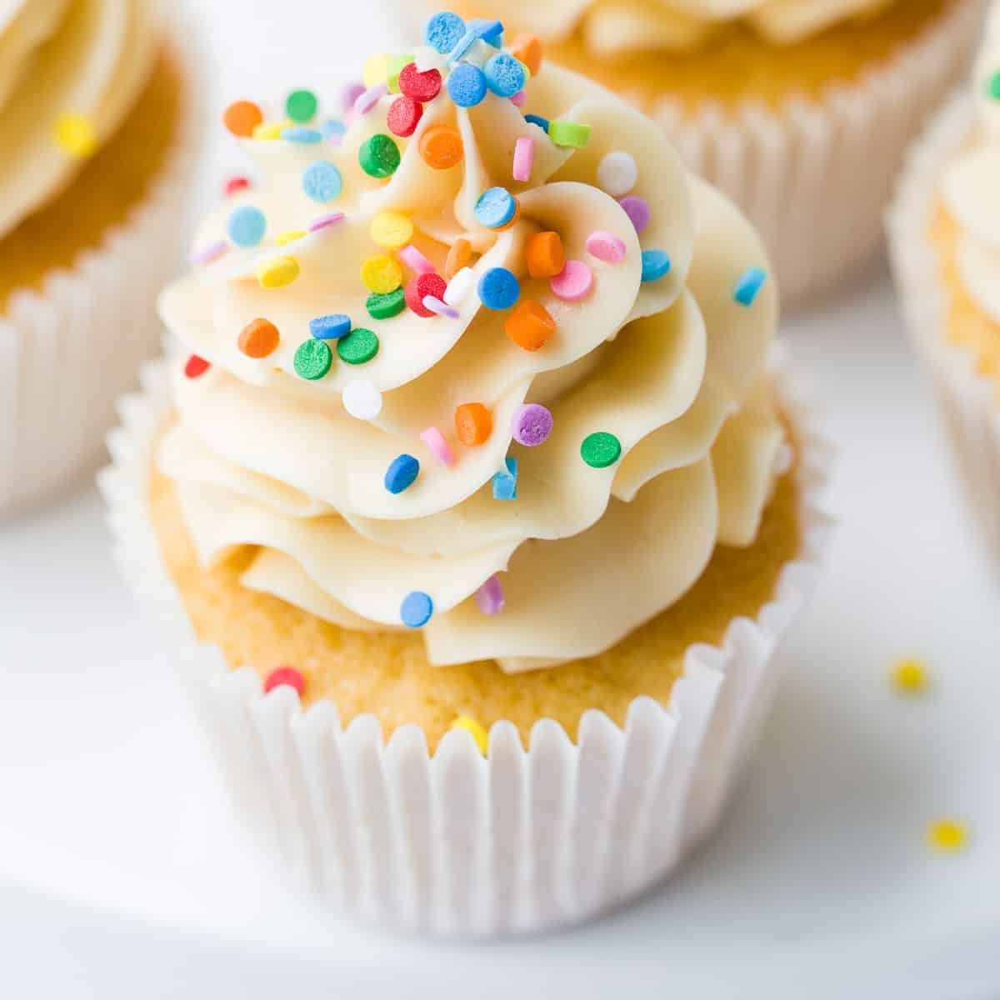
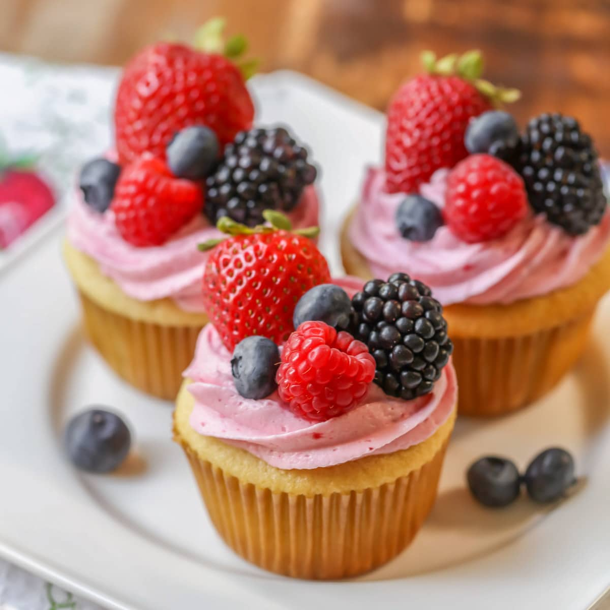

Welcome to The Sugar Shack, the ultimate destination for anyone with a sweet tooth! Here, we share
delicious and easy-to-follow recipes for all your favorite sugary treats, from classic chocolate
chip cookies to extravagant layer cakes. Join us on a journey through the world of confections, and
indulge in the most mouthwatering desserts you've ever tasted!
Fun and Festive Holiday Treats to Delight Your Guests
Gingerbread Cookies

No holiday dessert spread is complete without gingerbread cookies. This classic recipe is easy to
make and can be cut into fun holiday shapes like stars, trees, and snowflakes. Add a little royal
icing and some festive sprinkles for a decorative touch.
Ingredients:
3 cups all-purpose flour
1 tsp baking soda
2 tsp ground ginger
1 tsp ground cinnamon
1/2 tsp ground cloves
1/4 tsp salt
1/2 cup unsalted butter, at room temperature
1/2 cup brown sugar
1/4 cup molasses
1 large egg
Directions:
In a medium bowl, whisk together the flour, baking soda, ginger, cinnamon, cloves, and salt.
In a large bowl, beat the butter and sugar together until light and fluffy. Beat in the molasses
and egg until well combined.
Gradually add the flour mixture to the butter mixture, mixing until just combined.
Divide the dough into two equal portions and shape into disks. Wrap each disk in plastic wrap
and chill in the refrigerator for at least 2 hours or overnight.
Preheat the oven to 350°F (175°C). Line a baking sheet with parchment paper.
On a lightly floured surface, roll out the dough to 1/4 inch thickness. Use cookie cutters to
cut out desired shapes and transfer to the prepared baking sheet.
Bake for 10-12 minutes, until the edges are lightly browned. Cool on the baking sheet for 5
minutes before transferring to a wire rack to cool completely.
Candy Cane Bark

This easy-to-make candy cane bark is a festive and delicious treat that everyone will love. It's a
perfect holiday gift or party favor, and can be customized with your favorite toppings.
Ingredients:
12 oz semisweet chocolate chips
6 oz white chocolate chips
6-8 candy canes, crushed
Optional: sprinkles, chopped nuts, or other toppings
Directions:
Line a baking sheet with parchment paper.
Melt the semisweet chocolate chips in a double boiler or in the microwave, stirring every 30
seconds until melted and smooth.
Pour the melted chocolate onto the prepared baking sheet and spread evenly.
Melt the white chocolate chips in a double boiler or in the microwave, stirring every 30 seconds
until melted and
Satisfy Your Sweet Tooth with these Irresistible Cupcake Recipes
Do you have a craving for something sweet and indulgent? Look no further than these delicious cupcake
recipes! Whether you're a fan of classic vanilla, rich chocolate, or fruity flavors, there's a cupcake
here to satisfy your sweet tooth.
Classic Vanilla Cupcakes

Vanilla cupcakes are a timeless classic, and this recipe is sure to please. With a moist and fluffy
texture and a rich vanilla flavor, these cupcakes are perfect for any occasion.
Ingredients:
1 1/2 cups all-purpose flour
1 1/2 teaspoons baking powder
1/2 teaspoon salt
1/2 cup unsalted butter, softened
1 cup granulated sugar
2 large eggs
2 teaspoons vanilla extract
1/2 cup milk
Instructions:
Preheat the oven to 350°F (175°C). Line a cupcake pan with cupcake liners.
In a medium bowl, whisk together the flour, baking powder, and salt.
In a large bowl, cream together the butter and sugar until light and fluffy. Beat in the eggs one at
a time, then stir in the vanilla extract.
Add the dry ingredients to the butter mixture in three additions, alternating with the milk and
beginning and ending with the dry ingredients.
Divide the batter evenly among the cupcake liners, filling each about two-thirds full.
Bake for 18-20 minutes, or until a toothpick inserted into the center of a cupcake comes out clean.
Remove from the oven and let cool completely before frosting.
Rich Chocolate Cupcakes
If you're a chocoholic, these rich chocolate cupcakes are sure to satisfy your cravings. With a decadent
chocolate flavor and a smooth, creamy frosting, these cupcakes are a chocolate lover's dream.
Ingredients:
1 1/2 cups all-purpose flour
1/2 cup unsweetened cocoa powder
1 teaspoon baking soda
1/2 teaspoon baking powder
1/2 teaspoon salt
1/2 cup unsalted butter, softened
1 cup granulated sugar
2 large eggs
2 teaspoons vanilla extract
1/2 cup milk
Instructions:
Preheat the oven to 350°F (175°C). Line a cupcake pan with cupcake liners.
In a medium bowl, whisk together the flour, cocoa powder, baking soda, baking powder, and salt.
In a large bowl, cream together the butter and sugar until light and fluffy. Beat in the eggs one at
a time, then stir in the vanilla extract.
Add the dry ingredients to the butter mixture in three additions, alternating with the milk and
beginning and ending with the dry ingredients.
Divide the batter evenly among the cupcake liners, filling each about two-thirds full.
Bake for 18-20 minutes, or until a toothpick inserted into the center of a cupcake comes out clean.
Remove from the oven and let cool completely before frosting.
To make the frosting, cream together 1/2 cup of unsalted butter, 2 cups of powdered sugar, 1/4 cup
of unsweetened cocoa powder, and 2-3 tablespoons of milk until light and fluffy.
Frost the cupcakes and decorate as desired.
Fruity Cupcakes

If you prefer a fruity flavor, these lemon and raspberry cupcakes are sure to please. With a zesty lemon
flavor and bursts of tart raspberry throughout, these cupcakes are perfect for a summer afternoon.
Ingredients:
1 1/2 cups all-purpose flour
1 1/2 teaspoons baking powder
1/2 teaspoon salt
1/2 cup unsalted butter, softened
1 cup granulated sugar
2 large eggs
1/4 cup fresh lemon juice
1 tablespoon lemon zest
1/2 cup milk
1/2 cup fresh raspberries, chopped
Instructions:
Preheat the oven to 350°F (175°C). Line a cupcake pan with cupcake liners.
In a medium bowl, whisk together the flour, baking powder, and salt.
In a large bowl, cream together the butter and sugar until light and fluffy. Beat in the eggs one at
a time, then stir in the lemon juice and zest.
Add the dry ingredients to the butter mixture in three additions, alternating with the milk and
beginning and ending with the dry ingredients.
Stir in the chopped raspberries.
Divide the batter evenly among the cupcake liners, filling each about two-thirds full.
Bake for 18-20 minutes, or until a toothpick inserted into the center of a cupcake comes out clean.
Remove from the oven and let cool completely before frosting.
To make the frosting, cream together 1/2 cup of unsalted butter, 2 cups of powdered sugar, 1/4 cup
of fresh raspberry puree, and 2-3 tablespoons of milk until light and fluffy.
Frost the cupcakes and decorate with additional raspberries and lemon zest, if desired.